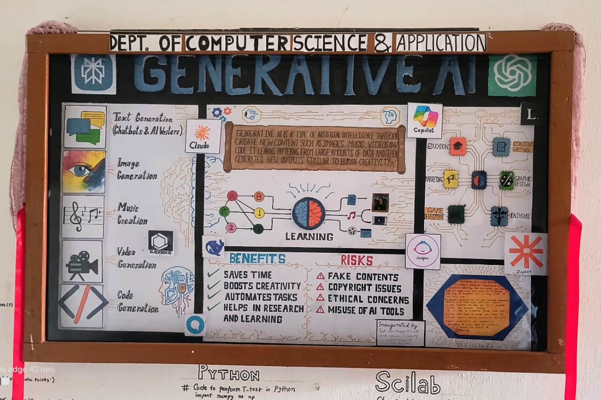

It is the wall mazagin of Computer science and application department. It's name is COPUTECH and the topic of the wall mazagin is Generative AI. It is created by BCA 2nd semester students and it was inaugurated on 19 March 2026 by the Preeti Devi Narzary and Divya Chauhan, IT faculty, NIELIT guwahati. Generative AI is powerful technology which is changing our way of thinking and creating. It is an artificial intelligence which helps us on creating new content like generating text, images, music, even videos and generating codes also. It is already offering many benefits but it is also our responsibility to use it responsible and ethically. Generative AI is not about machines creating contents but it's about human and technology working together to make smarter future.